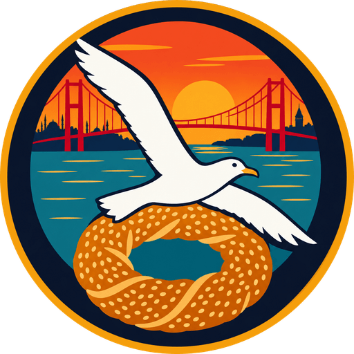

Martı
.
Skor
0
Kombo
x1
Mesafe
0 m
En iyi
0
Enerji
Martı
.
Loading…
Ayarlar
EN
Görevler
Yüksek skorlar
Claude Game Arena · built by Claude Haiku 5.5 · assets remastered
Duraklatıldı
Devam et
Yeniden başla
Ayarlar
Ana menü
Ayarlar
Genel ses
Müzik
Efektler
Dil
Türkçe
English
Kalite
Düşük
Yüksek
Tam ekran
Aç / kapat
Geri
Koşu bitti
Skor
0
En iyi
0
Mesafe
0
Simit
0
Tekrar dene
Ana menü